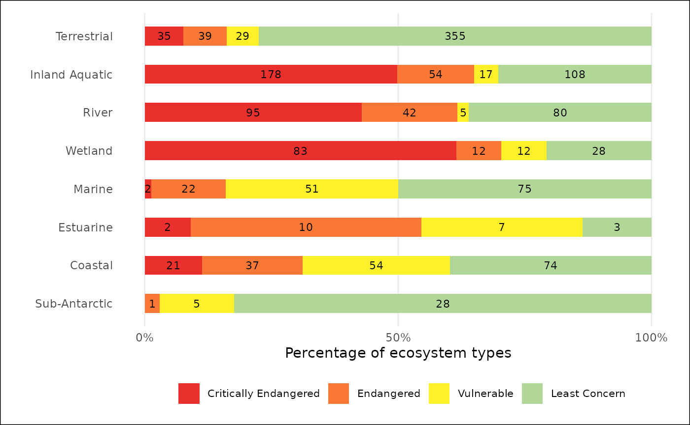
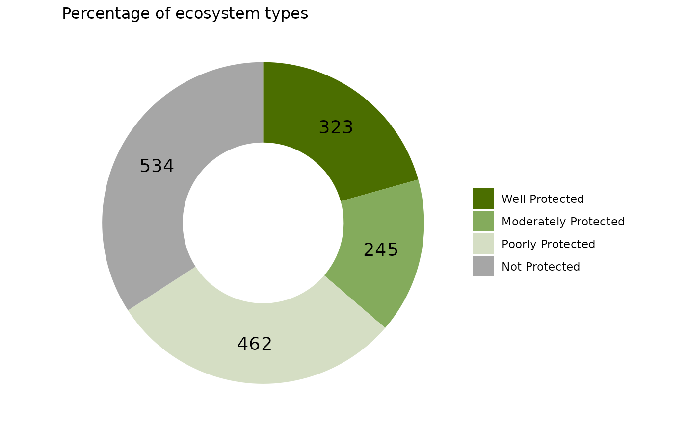
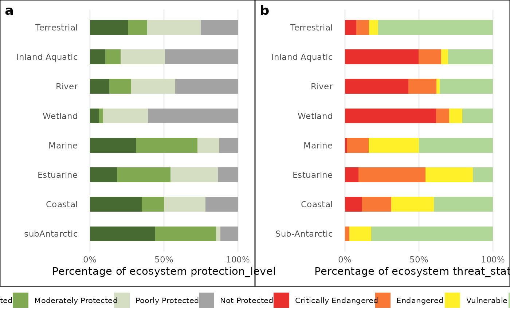
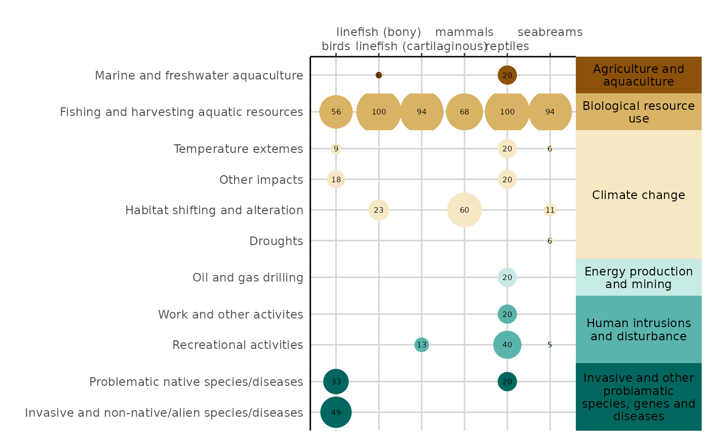

This Vignette is to help users become familiar with the NBA package and get the most use out of its functions.
This package was create to help create the figures, plots, tables, and maps for the NBA. The functions are split into those used to make graphs, those used to makes tables, and those used to make maps.
The graph functions consist of one main plot funcion called NBA_plot that will create either a bar or donut plot and colour the graph by matching the category words (such as endangered, well protected, natural etc) with their set colours. There is then a complimentary function called NBA_comp which is used if you want to plot two plots together using gg_arrange as the underlying code, and NBA_theme that is a ggplot theme with all the NBA presets that can be applied to any ggplot object to ensure the graph maintains the NBA ‘look’.
The table functions consist of NBA_tbl which makes a basic tabe for a quarto document outputting to an html, NBA_colr_tbl which makes a basic table with a purple heading bar and colours the category names by their preset colours. There is also a complimentary NBA_gt_theme function that styles any gt table with the NBA’s preset styling.
The map functions currently only consist of one function NBA_map, made using ggplot 2 and recreates the maps in the marine technical report 2018.
There are then three example datasets that can be accessed to test the functions and see the required format of the data to use the functions, which are: NBA_example_thr_data, NBA_example_pro_data, and NBA_example_RLI_data. There is also a list of the category names (NBA_categories) that are recognised by the function so that you can make sure you are using the correct naming convention. The functions are case sensitive so you must be careful when naming your categories.
##Graph functions
Load the example data and use the variouse functions to create NBA plots.
- bar plot
NBA_example_thr_data <- NBA_example_thr_data
bar_plot <- NBA_plot(NBA_example_thr_data,
`OVERALL types`,
2:5,
CHRT = "bar",
NUM = TRUE,
LAB = "Percentage of ecosystem types",
SAVE = NULL)
bar_plot
- donut plot
NBA_example_pro_data <- NBA_example_pro_data
donut_plot <- NBA_plot(NBA_example_pro_data,
`OVERALL types`,
2:5,
CHRT = "donut",
NUM = TRUE,
LAB = "Percentage of ecosystem types",
GRP = F,
SAVE = NULL)
donut_plot
- Combined bar plot
NBA_example_pro_data <- NBA_example_pro_data
NBA_example_thr_data <- NBA_example_thr_data
NBA_example_comb_data <- NBA_example_comb_data
bar_plot_comb <- NBA_plot_comb(
NBA_example_comb_data,
GROUPS= `OVERALL types`,
METRIC_COL = metric,
METRICS = c("protection_level", "threat_status"),
COLS = 3:10,
CHRT = "bar",
NUM = FALSE,
LAB = "Percentage of ecosystem",
SAVE=NULL)
bar_plot_comb
- RLI plot
NBA_example_RLI_data <- NBA_example_RLI_data
RLI_plot <- RLI_plot(NBA_example_RLI_data,
Years,
RLI,
min,
max)
RLI_plot
- NBA ggplot theme
library(ggplot2)
NBA_example_pro_data <- NBA_example_pro_data
gg_plot <- ggplot(NBA_example_pro_data, aes(x = `OVERALL types`, y = `Well Protected`))+
ggplot2::geom_point()+
NBA_theme()
gg_plot